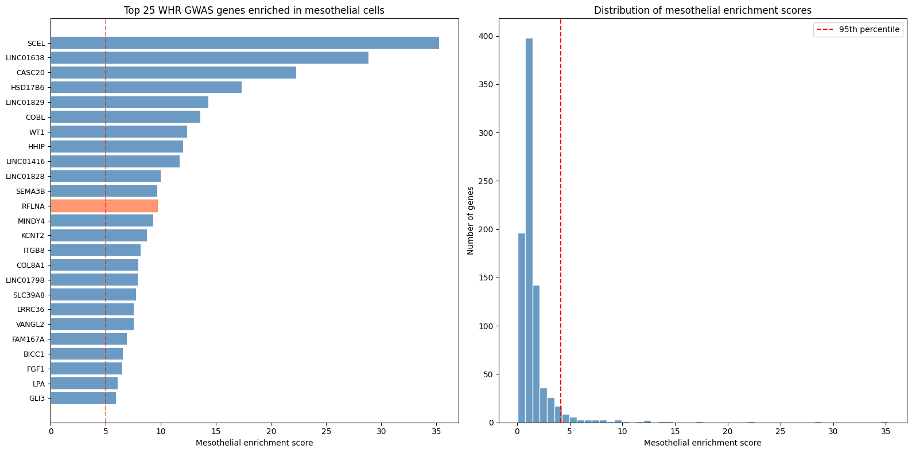

Summary
Genome-wide association studies have identified thousands of genetic loci linked to disease risk, but a GWAS hit on its own rarely explains anything. It points to a region of the genome, not a mechanism. This project builds a full evidence chain, from a genetic signal for waist-to-hip ratio adjusted for BMI down to the specific cell type responsible, using only public data.
Six loci associated with WHRadjBMI were carried through three layers of evidence: whether the signal sits in active regulatory DNA in adipose tissue, whether it colocalizes with a change in gene expression, and which cell type within adipose tissue actually expresses the gene. Two loci, RSPO3 and CCDC92, came through with strong support at every layer, pointing to specific mechanisms in fat progenitor cells and mature adipocytes respectively. One locus, VEGFA, showed a textbook case of a real biological signal getting diluted into invisibility by bulk tissue sequencing, because the responsible cell type makes up only a small fraction of the tissue sampled. Another, RFLNA, turned out to point toward a completely different tissue than expected once single-cell data was brought in.
TThe value of this project is less about any single gene and more about demonstrating why integrating GWAS, eQTL, epigenomics, and single-cell data in sequence is necessary. Each layer catches something the one before it would have missed or misread.
Introduction and Background
Waist-to-hip ratio adjusted for BMI (WHRadjBMI) is a measure of body fat distribution, and it matters clinically because where fat is stored predicts metabolic risk more accurately than overall body weight does. GWAS have found hundreds of loci associated with this trait, but a GWAS p-value only tells you that a region of DNA is statistically linked to the phenotype. It does not tell you which gene is responsible, what that gene does, or in which tissue and cell type it acts. Most GWAS hits sit in non-coding DNA, which means the likely explanation is regulatory, a variant changing how much of a nearby gene gets transcribed, rather than changing the protein itself.
Closing that gap between statistical association and biological mechanism usually takes several separate lines of evidence. Expression quantitative trait loci (eQTL) data can show whether the same genetic variant that shows up in the GWAS also correlates with expression differences of a nearby gene in a relevant tissue. Epigenomic annotation, things like chromatin accessibility and histone marks, can show whether the variant physically sits inside a region of DNA that is actively regulating transcription in that tissue. And single-cell atlases can resolve which specific cell type, out of the dozens present in a tissue like adipose fat, is actually responsible for that expression, something that bulk tissue sequencing averages away and cannot see.
This project builds that full chain for six WHRadjBMI-associated loci, using GWAS Catalog summary statistics, GTEx eQTL data, ENCODE SCREEN regulatory annotations, and a single-cell atlas of human white adipose tissue.
Methodology and Data
GWAS and epigenomic annotation
WHRadjBMI associations were downloaded from the GWAS Catalog. Each lead variant was checked against ENCODE SCREEN candidate cis-regulatory elements (cCREs) to see whether it physically overlaps an active regulatory region, based on chromatin accessibility and H3K27ac signal, in adipose tissue.
eQTL colocalization.
For each locus, GTEx v8 eQTL data was used to check whether the same lead SNP, or one in strong linkage with it, also acts as a significant eQTL for a nearby gene in subcutaneous or visceral adipose tissue. A colocalization was called strong when the GWAS lead SNP and the top eQTL SNP were the same variant, possible when they were nearby but not identical, and unlikely or absent when no meaningful eQTL signal was found in adipose tissue at all.
Single-cell Resolution
For genes with an eQTL signal, expression was checked against a single-cell RNA-seq atlas of human white adipose tissue from Emont et al. 2022, covering 166,149 cells across the major cell types present in fat, preadipocytes, mature adipocytes, endothelial cells, and mesothelial cells among others. This step identifies which specific cell population is driving the bulk tissue signal seen in GTEx.
RSPO3 is the cleanest result. The lead GWAS SNP, rs72959041, is the same variant driving expression changes in subcutaneous adipose tissue, and it sits inside an active enhancer with open chromatin and a strong H3K27ac signal. In the single-cell data, RSPO3 expression is highest in preadipocytes rather than mature fat cells, which fits its known role in WNT signaling, a pathway that governs whether a progenitor cell commits to becoming a fat cell in the first place. The risk allele appears to raise RSPO3 expression specifically in these progenitor cells, a plausible mechanism for altering how fat depots grow and expand over time.
CCCDC92 shows an equally clean pattern, with the same SNP, rs7133378, acting as both the GWAS lead and the strongest eQTL in subcutaneous adipose. Single-cell data places its expression across the mature adipocyte lineage, consistent with its known role in lipid metabolism.
VEGFA is the most instructive negative result in the set. The GWAS signal is enormous, one of the strongest in the whole list, but the eQTL signal in bulk adipose tissue is weak and the top eQTL SNP sits over 600kb away from the GWAS lead, which normally would be read as evidence against colocalization. The single-cell data explains why. VEGFA is expressed almost entirely in endothelial cells, which make up only around 2 percent of a bulk adipose sample. A real, cell-type-specific signal like that gets averaged out to near invisibility once it's mixed in with the other 98 percent of the tissue, which is exactly the kind of failure mode bulk RNA-seq is prone to and single-cell data is built to catch.
RFLNA turned out to be the most unexpected result. Instead of colocalizing with any adipose eQTL, the GWAS SNP matched a nerve tibial expression signal, which on its own would suggest the wrong tissue entirely. But the single-cell atlas showed RFLNA expression concentrated in mesothelial cells, the thin lining of tissue on the outside of visceral fat. These cells are present in visceral adipose but absent from subcutaneous adipose, which explains both why the signal looked tissue-mismatched in bulk data and why it would only ever show up as a visceral-specific effect. Without the single-cell layer, this locus would likely have been dismissed as noise.

Conclusion
The strongest immediate follow-up is formal statistical colocalization, using a tool like the coloc R package, for COBLL1 and RFLNA specifically, since both currently rest on a visual and directional read of the eQTL and GWAS signals rather than a formal posterior probability. This would put the two intermediate-confidence loci on the same statistical footing as RSPO3 and CCDC92. For RFLNA and the mesothelial finding, the natural next step is a dedicated look at the omental mesothelial cell population across the full set of WHR GWAS loci, not just this one gene, since mesothelium is a tissue compartment that bulk adipose studies have historically ignored.
More broadly, this pipeline could be extended past GWAS Catalog lead SNPs to fine-mapped credible sets, and past adipose tissue alone to compare colocalization patterns across multiple metabolically relevant tissues side by side, which would help distinguish loci with adipose-specific mechanisms from those acting through a different organ altogether.
Six loci, three layers of evidence, and two genes, RSPO3 and CCDC92, came out the other end with a specific, testable mechanism attached to them. That is the actual output of GWAS follow-up work of this kind, not a longer list of associated genes but a shorter list of ones with a real story behind them. The VEGFA and RFLNA cases matter just as much as the clean hits, because they show concretely why bulk tissue data alone systematically misses or misattributes real biological signal, and why adding a single-cell layer to GWAS follow-up work is no longer optional if the goal is figuring out mechanism rather than just cataloging association.
More broadly, this two-phase approach, small independent datasets first to find candidates that replicate, then a single larger matched-omics cohort to test mechanism, is a template worth reusing for other cancers where GEO has multiple small independent studies but TCGA also has a matched cohort available. The gene list used in the TCGA phase was curated rather than genome-wide, which kept the analysis tractable but means a genome-wide methylation and expression scan on the same 296 patients is a reasonable next step to check whether other strong candidates were missed simply because they were not on the original list.References
1. GWAS Catalog. Waist-to-hip ratio adjusted for BMI associations, MacArthur, J. et al. 2017.
2. GTEx Consortium. The GTEx Consortium atlas of genetic regulatory effects across human tissues. Science, 2020.
3. ENCODE Project Consortium. Expanded encyclopaedias of DNA elements in the human and mouse genomes. Nature, 2020.
4. Emont, M. P., Jacobs, C., Essene, A. L., et al. A single-cell atlas of human and mouse white adipose tissue. Nature, 2022.
5. Giambartolomei, C., Vukcevic, D., Schadt, E. E., et al. Bayesian test for colocalisation between pairs of genetic association studies using summary statistics. PLOS Genetics, 2014.
6. Emdin, C. A., Khera, A. V., Natarajan, P., et al. Genetic association of waist-to-hip ratio with cardiometabolic traits, type 2 diabetes, and coronary heart disease. JAMA, 2017.